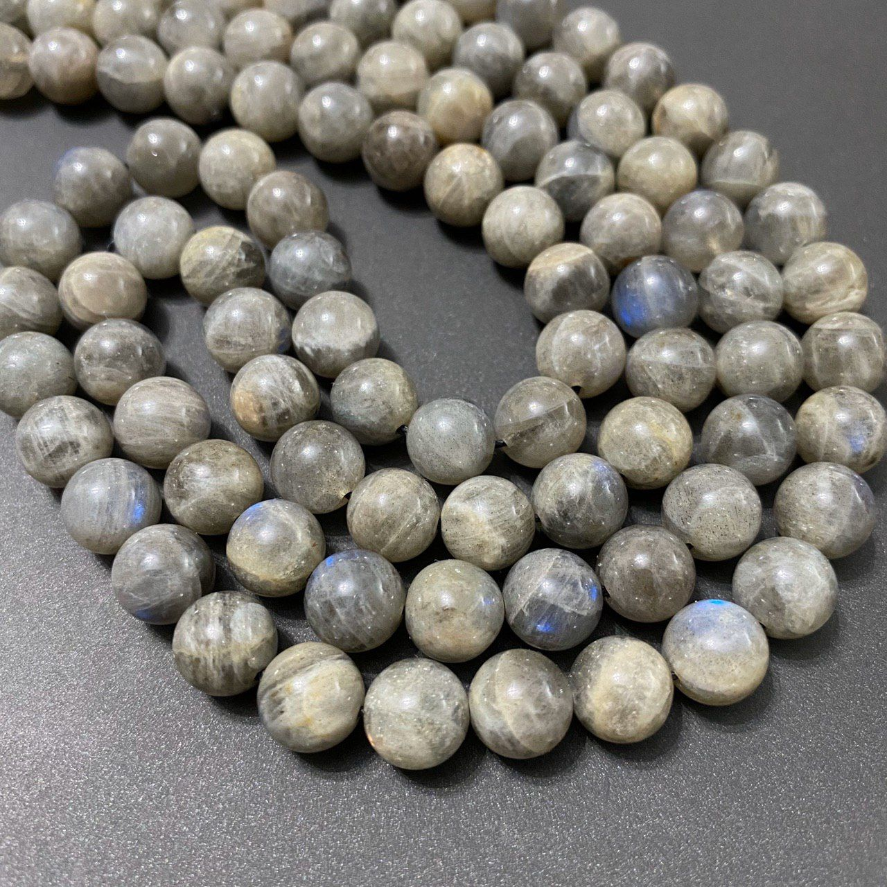

سنگها حامل انرژی هستند که این انرژی میتواند بر بدن ما و بخصوص چاکراها و پاکسازی آنها تاثیر بگذارد
- در استفاده از سنگها به شفابخش بودن و انرژی و قدرت بیکران آنها در درمان بیماری خود، باید ایمان کامل داشته و با اعتقاد به این کار پرداخت.
- دیگر آن که هر شخصی باید خودش، سنگش را انتخاب کند و این انتخاب ممکن است بزرگ، کوچک، تراشخورده و یا صیقل نیافته باشد.
- اگر سنگی برای شخصی تاثیرات خوبی داشت، دلیل آن نیست که برای شما هم مفید باشد و باید بین شما و سنگی که انتخاب میکنید جاذبه و کششی وجود داشته باشد.
سنگ منتخب خود را درحالی که دراز کشیدهاید و در رهایی کامل قرار گرفتهاید، برروی چاکرای مخصوص قرار دهید.